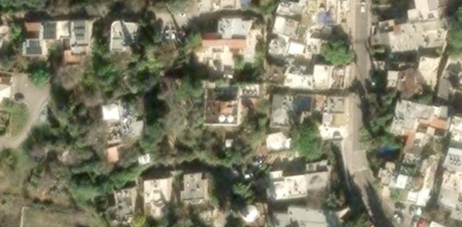
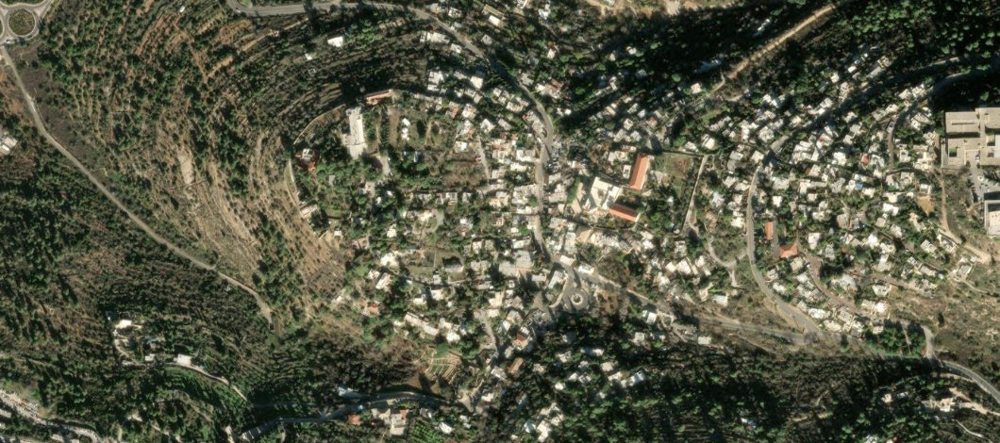
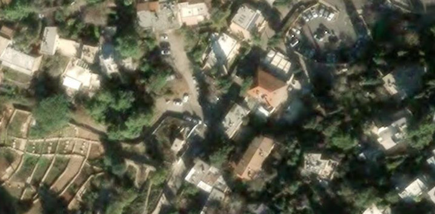
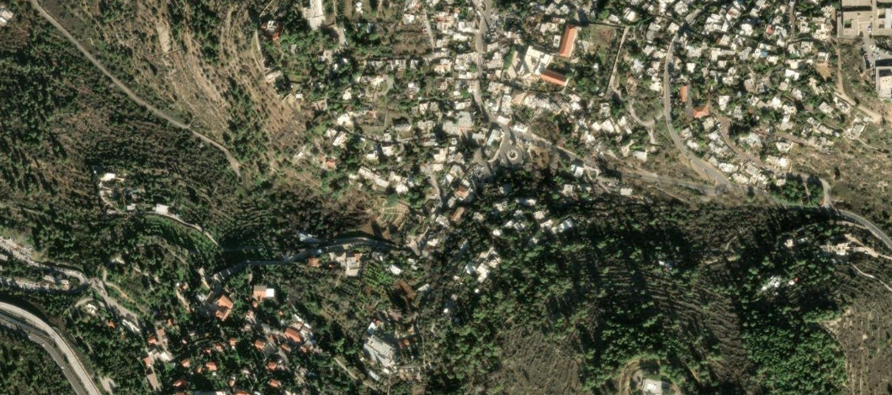

Smooth painted concrete challenges RGB/LWIR matching. Add ground views for slides, openings and overhangs.
SCOUTING GATE · CLEARANCE UNVERIFIED
Authorized empty playground; children and neighboring homes
Logistics burden: moderate Source fact: public neighbourhood playground sculpture (Wikipedia, Kiryat HaYovel). Source fact: nearest OSM-mapped lot tagged access=yes, fee conditional Su-Fr 08:00-19:00 is ~390 m away (way/221176748) - association with the playground is unverified, so no vehicle point is given. Footways and steps are mapped within ~25 m of the sculpture. Planning estimate: 2-9 min from kerb or that lot. Small compact scene, easy walk-in. Children/residential homes close by, so capture before school hours; painted shell is smooth and glossy so RGB/LWIR matching is weak and ground views for slides and openings are required. Surrounding slopes and buildings limit open sky/flight envelope (planning note). Vehicle waypoint not verified. Do not drive to the scene marker.
Uncertainties: No authoritative parking or entrance source found; no vehicle point. Mapped lot 390 m away may be a different facility (conditional fee tag). Municipal/neighbourhood rules and resident privacy not checked.
Scene anchor: 31.761687 N, 35.172255 E. Object pin from OpenStreetMap; not surveyed.
Ground-level close view of the HaMifletzet (The Golem) sculpture-playground, Rabinovich Park, Kiryat HaYovel Photo date: 2012-12-14 11:13. Resized only; no crop.
LiDAR tests smooth bowl curvature against RGB/LWIR reconstructions. Low visual texture is an intentional challenge.
SCOUTING GATE · CLEARANCE UNVERIFIED
Authorized closure; skaters; roads
Logistics burden: low Source fact (OSM): named surface lot 'Liberty Bell parking', access=yes, fee=yes, asphalt, ~85 m from the mapped skatepark; an asphalt service road is ~6 m from the lot. A free access=yes lot (way/756952948) is ~100 m away. Source fact (iTravelJerusalem): Liberty Bell Park is a large public park next to the skatepark; address Keren HaYesod St. Park hours/opening of the skatepark not verified. Very short walk, open concrete geometry, good for a fast first test. Skaters, families and the Train Theater/Emek Refaim roads nearby mean people-in-frame and a controlled closure are needed. Smooth low-texture bowl surfaces are an intentional matching challenge. Little canopy over the bowls.
Uncertainties: OSM fee/opening status of the lot may be stale; municipal operation not confirmed. Skatepark opening hours and closure authority not found.
Scene anchor: 31.768833 N, 35.222633 E. Mapped skatepark, not the general Liberty Bell Park tourism pin.
Oblique drone view of the Gan Paamon HaDeror (Liberty Bell Park) skatepark bowls and street section Photo date: 2022-12-12 11:54:22. Resized only; no crop.
Scene anchor: 31.768439 N, 35.222500 E. Davidson building south of the skatepark; not the old theater further north.
Ground-level view of the current Davidson Theatre (Train Theater) building, Liberty Bell Park, with signage Photo date: 2021-10-15 17:20:35. Resized only; no crop.
BOLOGS / JERUSALEM FIELD ATLASFULL CATALOGUE / NOT FLIGHT-CLEARED
Koret / San Simon Park
Katamon
04 site ID
GROUND / OBLIQUE
Photo not yet verifiedNo correctly identified, reusable image published.
01 / FOCUSN ↑
Map image could not load. Keep the assets folder with this presentation.
02 / NEIGHBORHOODN ↑
Map image could not load. Keep the assets folder with this presentation.
03 / JERUSALEM REGIONN ↑
Map image could not load. Keep the assets folder with this presentation.
RECONSTRUCTION TARGET
Precipitation Zone 600 sculpture; paths; mature trees; built-natural boundaries
SENSORS / COVERAGE
Sculpture, tree trunks and paths test built-natural boundaries. Keep moving foliage separate from stable reference surfaces.
SCOUTING GATE · CLEARANCE UNVERIFIED
Municipal coordination; exclude monastery and memorial areas
Logistics burden: moderate Source fact (Jerusalem Foundation): one-acre public park beside the 1859 San Simon Monastery; central lawn, footpath, two play areas, basketball court, 'Precipitation Zone 600' sculpture (1985). Only an untagged OSM lot ~130 m away; one mapped lot is access=private. Steps and footways wrap the park. The park itself is small (~1 acre) so the OSM scene width of 420 m is far larger than the park; restrict to the park and exclude the monastery and memorial. Mature trees and surrounding buildings give canopy/occlusion and a constrained flight envelope. Residential neighbours and play areas - capture early. Vehicle waypoint not verified. Do not drive to the scene marker.
Uncertainties: No credible public lot coordinate; on-street parking unverified. Monastery/memorial exclusion boundaries and municipal rules not checked.
BOLOGS / JERUSALEM FIELD ATLASFULL CATALOGUE / NOT FLIGHT-CLEARED
Jerusalem Botanical Gardens
Givat Ram / Nayot
05 site ID
GROUND / OBLIQUE
Photo not yet verifiedNo correctly identified, reusable image published.
01 / FOCUSN ↑
Map image could not load. Keep the assets folder with this presentation.
02 / NEIGHBORHOODN ↑
Map image could not load. Keep the assets folder with this presentation.
03 / JERUSALEM REGIONN ↑
Map image could not load. Keep the assets folder with this presentation.
RECONSTRUCTION TARGET
Greenhouse exterior; terraces; rocks; water and vegetation interfaces
SENSORS / COVERAGE
Compare canopy, terrain and greenhouse exteriors. Glass and water are difficult LiDAR surfaces; multispectral adds vegetation information.
SCOUTING GATE · CLEARANCE UNVERIFIED
Garden agreement; water and glass unsuitable as sole geometric reference
Logistics burden: high Source fact (iTravelJerusalem, undated listing): ticketed garden (adult 40 NIS), open until 19:00 on the page, ~120-150 dunam, free parking. Operator is the university garden, so operator agreement is required. OSM shows many untagged lots around the Givat Ram campus; none can be tied to the garden entrance. Poor fit for 'easy/fast': large site needing a bounded sub-scene, dense planting canopy, paths and greenhouses; opening hours limit pre-dawn LWIR; ticketed/visitor-controlled. Terrace/rock-garden outdoor sub-scenes could be viable but must be selected on the ground. Greenhouse glass and water are excluded. Vehicle waypoint not verified. Do not drive to the scene marker.
Uncertainties: Opening hours, price and parking details are from a third-party listing and may be stale. No bounded sub-scene or garden-internal approach established. Walking range depends on the unselected sub-scene.
BOLOGS / JERUSALEM FIELD ATLASFULL CATALOGUE / NOT FLIGHT-CLEARED
HaMesila Park - bounded Baka segment
Baka
06 site ID
GROUND / OBLIQUE
Photo not yet verifiedNo correctly identified, reusable image published.
01 / FOCUSN ↑
Map image could not load. Keep the assets folder with this presentation.
02 / NEIGHBORHOODN ↑
Map image could not load. Keep the assets folder with this presentation.
03 / JERUSALEM REGIONN ↑
Map image could not load. Keep the assets folder with this presentation.
RECONSTRUCTION TARGET
Disused rails and sleepers; long linear geometry; paving and vegetation
SENSORS / COVERAGE
Repeated rails and sleepers can confuse matching. Capture oblique views and assess thin-structure completeness against LiDAR.
SCOUTING GATE · CLEARANCE UNVERIFIED
Pedestrian control; choose exact segment away from active transport
Logistics burden: moderate Source fact (OSM): lot tagged access=yes, fee=yes, ~70 m from the proposed segment pin, adjoining a paving-stone service lane and asphalt tertiary streets (HaRakevet, Azaria). A free access=yes lot (way/44279038) ~210 m away. Source fact (Jerusalem Foundation 2019 story): HaMesila is a pedestrian/cycle park on the old railway line. Scene pin is a proposed approximate segment, not a surveyed point. Linear park with walkers/cyclists, so capture at low traffic and choose a segment away from active transport and the railway-station area. Repeated rails/sleepers confuse matching. Moderate tree cover; narrow park corridor with adjacent buildings restricts the flight envelope.
Uncertainties: Lot identity and tariff come from OSM only; may be tied to the First Station complex. Segment not yet chosen; walking time is nominal. Pedestrian control and municipal permission not checked.
Tall columns, narrow supports and tree crowns test geometric completeness. Wind and canopy motion limit cross-flight comparisons.
SCOUTING GATE · CLEARANCE UNVERIFIED
Security-adjacency screening; kibbutz agreement; tree motion
Logistics burden: moderate Source fact (iTravelJerusalem): park inside Kibbutz Ramat Rachel, free entry, 'open at all hours, all days'; three 11 m columns each topped with an olive tree. Nearest untagged OSM lots are ~250-420 m from the columns; the nearest asphalt road (Tzur Baher road per OSM) is ~130 m away. Mapped tracks/footways lead to the columns. Tall thin columns and tree tops give a good geometry test, but tree motion/wind and canopy limit cross-flight comparison. The kibbutz and southern Jerusalem border/security adjacency need screening; time-of-day lighting for LWIR should be planned. Vehicle waypoint not verified. Do not drive to the scene marker.
Uncertainties: Public vehicle entrance/parking not substantiated; 'open at all hours' is third-party and undated. Kibbutz private control and security adjacency unresolved.
Logistics burden: moderate Source fact (OSM): park object with an asphalt unclassified street ~20 m away and a mapped access=yes surface lot ~280 m east (way/245188822, unnamed, no fee tag) - not tied to the park. KKL Jerusalem Forest page was bot-blocked and could not be read. Commemorative corner to be excluded per prior note. Compact urban/forest-edge park, short walk. Concrete slide offers good curvature but is a small target; adjacent slope/forest canopy and the trunk road (Ariel Sharon) nearby shape the flight envelope. Residential edge, so privacy and early capture. Vehicle waypoint not verified. Do not drive to the scene marker.
Uncertainties: KKL page not read (bot block); no authoritative entrance/parking source. Municipal vs KKL ownership of the exact park not confirmed.
Low walls and stepped remains test height discontinuities. Archaeological detail may be below aerial sampling resolution.
SCOUTING GATE · CLEARANCE UNVERIFIED
Security-adjacency screening; heritage and kibbutz approval
Logistics burden: moderate Source fact (iTravelJerusalem, undated): reopened 2002; Byzantine church, Roman camp and Second Temple mikvehs; free; 'open all hours, every day'. OSM: an untagged lot ~100 m from the garden (way/183040946) and service roads/tracks within ~20-110 m. Low walls and stepped remains give height discontinuities, but archaeological detail may fall below aerial sampling resolution; ground capture supplements. Inside a kibbutz with heritage control and security-adjacent screening; light tree canopy only. Small bounded scene. Vehicle waypoint not verified. Do not drive to the scene marker.
Uncertainties: Open-all-hours claim is a stale-prone third-party listing. No credible visitor parking point; kibbutz/heritage and security permissions unresolved.
Scene anchor: 31.739890 N, 35.216751 E. Target object identified in detailed OpenStreetMap geometry, not a generic park entrance.
Ground-level view of excavated walls and reconstructed capitals in the Ramat Rachel Archaeological Garden Photo date: 2011-01-11 10:02. Resized only; no crop.
Scene anchor: 31.766333 N, 35.224783 E. Reviewed OpenStreetMap object: The First Station. Not a surveyed position.
Ground view of the historic Ottoman-era (1892) Jerusalem railway station building, now the First Station complex, Jerusalem: arched ground-floor openings and stone facade (exterior). Photo date: February 2021 (Commons: פברואר 2021). Resized only (max 1200 px); no crop (Commons-scaled 1200px rendition fetched; original 2500x1185, output 1200x569).
BOLOGS / JERUSALEM FIELD ATLASFULL CATALOGUE / NOT FLIGHT-CLEARED
Scene anchor: 31.776276 N, 35.221604 E. Reviewed OpenStreetMap object: North Africa Jewish Heritage Center. Not a surveyed position.
Ground view of the entrance facade and octagonal tiled fountain of the North African Jewish Heritage Center, Mahane Israel, Jerusalem (exterior, street-side court). Photo date: 2024-01-06 10:58:51. Resized only (max 1200 px); no crop (Commons-scaled 1200px rendition fetched; original 4200x2800, output 1200x800).
BOLOGS / JERUSALEM FIELD ATLASFULL CATALOGUE / NOT FLIGHT-CLEARED
Scene anchor: 31.748621 N, 35.223849 E. Reviewed OpenStreetMap object: Agnon House. Not a surveyed position.
Ground view of the exterior of Agnon House, 16 Klausner St, Talpiot/Arnona, Jerusalem, with the 'Agnon House' sign visible at the fence. Photo date: 2010-11-05 18:12:19. Resized only (max 1200 px); no crop (Commons-scaled 1200px rendition fetched; original 3072x2304, output 1200x900).
BOLOGS / JERUSALEM FIELD ATLASFULL CATALOGUE / NOT FLIGHT-CLEARED
Scene anchor: 31.777427 N, 35.215856 E. Reviewed OpenStreetMap object: Beit Avi Hai. Not a surveyed position.
Oblique elevated (apparently drone) view of Beit Avi Chai, 44 King George St, Jerusalem, showing the stone building masses, courtyard and the street. Photo date: 2023-05-06 13:23:11. Resized only (max 1200 px); no crop (Commons-scaled 1200px rendition fetched; original 4000x2668, output 1200x801).
BOLOGS / JERUSALEM FIELD ATLASFULL CATALOGUE / NOT FLIGHT-CLEARED
Scene anchor: 31.784145 N, 35.220542 E. Reviewed OpenStreetMap object: Beit Tavor. Not a surveyed position.
Ground view from HaNevi'im Street of Tabor House (Beit Tavor, Conrad Schick's 1882 house), 58 HaNeviim, Jerusalem: stone wall, arched door and gabled bays. Photo date: 2015-05-13. Resized only (max 1200 px); no crop (Commons-scaled 1200px rendition fetched; original 2816x1880, output 1200x802).
Identification note: Commons title names both Rav Kook House and Tabor House; this frame was matched visually (green arched door, wall, gabled right-hand bay) to PikiWiki 148285 'Beit Tavor on HaNevi'im Street' and the Tabor Home heritage plaque.
BOLOGS / JERUSALEM FIELD ATLASFULL CATALOGUE / NOT FLIGHT-CLEARED
Alegra Hotel historic house
13 Derech HaAchayot - Ein Karem
25 site ID
GROUND / OBLIQUE
Photo not yet verifiedNo correctly identified, reusable image published.

01 / FOCUSN ↑
Map image could not load. Keep the assets folder with this presentation.

02 / NEIGHBORHOODN ↑
Map image could not load. Keep the assets folder with this presentation.
03 / JERUSALEM REGIONN ↑
Map image could not load. Keep the assets folder with this presentation.
RECONSTRUCTION TARGET
Historic stone building; garden; rooftop; walls and mixed materials
SENSORS / COVERAGE
Stone walls, roof terraces and vegetation. Capture only during an approved empty window to preserve a static scene.
Scene anchor: 31.768896 N, 35.225946 E. Reviewed OpenStreetMap object: Beit Ot HaMotzar. Not a surveyed position.
Ground view from the street (Hebron Road side) of the exterior of the Jerusalem House of Quality, the former khan-style stone complex with arched openings and terraces. Photo date: 2019-12-28 13:12:37. Resized only (max 1200 px); no crop (Commons-scaled 1200px rendition fetched; original 4608x3456, output 1200x900).
BOLOGS / JERUSALEM FIELD ATLASFULL CATALOGUE / NOT FLIGHT-CLEARED
Eden-Tamir Music Center
Ein Karem
27 site ID
GROUND / OBLIQUE
Photo not yet verifiedNo correctly identified, reusable image published.

01 / FOCUSN ↑
Map image could not load. Keep the assets folder with this presentation.

02 / NEIGHBORHOODN ↑
Map image could not load. Keep the assets folder with this presentation.
03 / JERUSALEM REGIONN ↑
Map image could not load. Keep the assets folder with this presentation.
RECONSTRUCTION TARGET
Stone house and garden; compact terraces; courtyard occlusion
SENSORS / COVERAGE
Stone-building and garden interfaces at a compact scale. Canopy occlusion and changing shadows need acquisition control.
Scene anchor: 31.771532 N, 35.224210 E. Reviewed OpenStreetMap object: Montefiore Windmill. Not a surveyed position.
Ground view looking up at the Montefiore Windmill (1857) tapering stone tower and timber sails, Yemin Moshe, Jerusalem. Photo date: 2013-09-24 14:51:49. Resized only (max 1200 px); no crop (Commons-scaled 1200px rendition fetched; original 3192x4788, output 800x1200).
BOLOGS / JERUSALEM FIELD ATLASFULL CATALOGUE / NOT FLIGHT-CLEARED
Scene anchor: 31.770863 N, 35.224919 E. Reviewed OpenStreetMap object: The Maurice M. Dwek Guest House. Not a surveyed position.
Elevated oblique view of the crenellated Long House of Mishkenot Sha'ananim, Jerusalem (Commons title: 'the Long House'), exterior roofline and terrain. Photo date: 2007-05-25. Resized only (max 1200 px); no crop (Commons-scaled 1200px rendition fetched; original 2288x1712, output 1200x898).
BOLOGS / JERUSALEM FIELD ATLASFULL CATALOGUE / NOT FLIGHT-CLEARED
Map image could not load. Keep the assets folder with this presentation.
02 / NEIGHBORHOODN ↑
Map image could not load. Keep the assets folder with this presentation.
03 / JERUSALEM REGIONN ↑
Map image could not load. Keep the assets folder with this presentation.
RECONSTRUCTION TARGET
Roman villa remains; terraces; water features; masonry and vegetation
SENSORS / COVERAGE
Terraces, masonry and vegetation combine several reconstruction regimes. Preserve archaeology and supplement hidden remains.
SCOUTING GATE · CLEARANCE UNVERIFIED
Controlled museum session by arrangement; children; heritage; rail adjacency
Logistics burden: high Source fact (iTravelJerusalem): free parking; open to groups with advance registration and to individuals/families only in July-August, intermediate days of Passover/Sukkot and school holidays; activities by prior booking. Directions are verbal, with no coordinate. OSM shows untagged lots 80-215 m from the pin and a rail crossing near the access. Poor fit for 'easy/fast': controlled open days/bookings, children's programmes and active cultural users, plus railway adjacency and heritage terraces under vegetation. Terraces, masonry and a mosaic/Roman villa give rich geometry but need arranged access. Vehicle waypoint not verified. Do not drive to the scene marker.
Uncertainties: Listing is undated and may be stale; current opening schedule must be confirmed with the operator. No vehicle coordinate; the rail crossing/barrier may be a controlled access.
Scene anchor: 31.743277 N, 35.177723 E. Reviewed OpenStreetMap object: Ein Yael. Not a surveyed position.
Ground/overlook view of excavated Roman villa remains (masonry walls, vaulted opening, terraces) at the Ein Yael outdoor museum, Jerusalem. Photo date: 2011-10-22. Resized only (max 1200 px); no crop (Commons-scaled 1200px rendition fetched; original 2592x1944, output 1200x900).
Scene anchor: 31.792649 N, 35.164059 E. The heritage operator publishes this navigation pin. It locates the property approach, not a surveyed building center. The generic tourism pin was rejected.
Elevated oblique view of the Yellin House in Motza (restored stone house, rooftop, orchard terraces and valley), geotagged at the operator's Waze pin. Photo date: June 2021 (Commons: יוני 2021). Resized only (max 1200 px); no crop (Commons-scaled 1200px rendition fetched; original 3386x2687, output 1200x953).
BOLOGS / JERUSALEM FIELD ATLASFULL CATALOGUE / NOT FLIGHT-CLEARED
Forester's House exterior
Southwestern Jerusalem hills near Nes Harim / location pending
32 site ID
GROUND / OBLIQUE
Photo not yet verifiedNo correctly identified, reusable image published.
01 / FOCUS
Location / image verification in progress Not yet published
02 / NEIGHBORHOOD
Location / image verification in progress Not yet published
03 / JERUSALEM REGION
Location / image verification in progress Not yet published
RECONSTRUCTION TARGET
Mandate-era stone building; roof-wall junctions; forest-edge setting
SENSORS / COVERAGE
RGB + LWIR + LiDAR planned. Site-specific coverage notes are being prepared.
SCOUTING GATE · CLEARANCE UNVERIFIED
KKL consent; building interior is closed and entry prohibited
Scene anchor: 31.734108 N, 35.095764 E. Reviewed OpenStreetMap object: Ein Yoel. Not a surveyed position.
Context view across the wooded valley at the Ein Yoel spring area (Israel Hiking Map contribution); the small concrete spring pool structure is visible in the middle distance. Shows the spring setting only; NOT the Ein Yoel schoolhouse. Photo date: 2022-07-16. Resized only (Commons 960px-wide rendition of a 1200x1600 original; output 900x1200); no crop.
Identification note: kind=context. Geotagged at the spring anchor (31.734108, 35.095764). Shows the spring/concrete pool setting only. The schoolhouse remains unlocated and unpictured; the spring anchor does not identify that building.
Photo limitation: Context only: shows the spring area, not the schoolhouse. The schoolhouse remains unlocated/unpictured and the spring anchor does not identify that building.
BOLOGS / JERUSALEM FIELD ATLASFULL CATALOGUE / NOT FLIGHT-CLEARED
Beit Zayit old agricultural silo
Beit Zayit village center
34 site ID
GROUND / OBLIQUE
Photo not yet verifiedNo correctly identified, reusable image published.
01 / FOCUSN ↑
Map image could not load. Keep the assets folder with this presentation.
02 / NEIGHBORHOODN ↑
Map image could not load. Keep the assets folder with this presentation.
03 / JERUSALEM REGIONN ↑
Map image could not load. Keep the assets folder with this presentation.
RECONSTRUCTION TARGET
Tall historic concrete agricultural structure; vertical planes and industrial form
SENSORS / COVERAGE
Tall concrete geometry tests vertical coverage. Confirm ownership, structural condition and present use before acquisition.
SCOUTING GATE · CLEARANCE UNVERIFIED
Confirm ownership/current use and structural condition; surrounding residents
Scene anchor: 31.782540 N, 35.162436 E. Public Silo place listing in Beit Zayit. The listing says permanently closed; this does not establish demolition or access to the structure.
BOLOGS / JERUSALEM FIELD ATLASFULL CATALOGUE / NOT FLIGHT-CLEARED
Map image could not load. Keep the assets folder with this presentation.
02 / NEIGHBORHOODN ↑
Map image could not load. Keep the assets folder with this presentation.
03 / JERUSALEM REGIONN ↑
Map image could not load. Keep the assets folder with this presentation.
RECONSTRUCTION TARGET
Seasonal basin; banks; exposed ground; vegetation and water boundaries
SENSORS / COVERAGE
Terrain and wet-dry interfaces change seasonally. Treat water and moving vegetation as separate evaluation masks.
SCOUTING GATE · CLEARANCE UNVERIFIED
Focus basin not utility installations; seasonal water and recreation
Logistics burden: moderate Source fact (Wikipedia): dam on Nahal Sorek built to collect winter floodwater and recharge the aquifer. OSM: several gates (some access=no tracks) and service roads around the basin; nearest untagged lots ~670 m away; an OSM viewpoint ~420 m. The basin is utility infrastructure, so access is likely controlled. Closest to the Motza gateway by position, but the approach is unverified. Water/vegetation moves seasonally; exclude utility installations and water; dry margins and the dam only. Open sky is likely good with little canopy except at the edges. Vehicle waypoint not verified. Do not drive to the scene marker.
Uncertainties: Gates/tracks may be restricted (OSM access=no on a nearby track). Ownership/operator of the reservoir and dry-margin legality not found. Scene pin differs by ~300 m from the OSM way centre.
Scene anchor: 31.783458 N, 35.154363 E. Reviewed OpenStreetMap object: Beit Zait Reservoir. Not a surveyed position.
Ground view of the Beit Zayit Reservoir shoreline with exposed rocky margin and the dam wall in the background. Photo date: 2013-03-28. Resized only; no crop.
Photo limitation: Single-date shoreline at one water level; the margin position changes seasonally.
Partial walls, arches and courtyard geometry. Ground views are needed to measure vaults and other aerially hidden surfaces.
SCOUTING GATE · CLEARANCE UNVERIFIED
Protected-site research/flight permission; visitors; ground views for vaults
Logistics burden: high Source fact (Wikipedia): national park and nature reserve ~7 km west of Jerusalem on a Roman road line with a Crusader courtyard building. OSM: two lots tagged access=customers 250-350 m from the ruin, lift gates 250-380 m away, and an untagged lot ~480 m. The NPA page was not readable, so fee, hours and entry rules are unverified. Poor fit for 'easy/fast': national-park permission and hours, visitors, stream vegetation canopy, and vaults/undersides that aerial sensors cannot see (ground capture needed). Use the park, stream and ruins ensemble only, not the standalone courtyard building. Vehicle waypoint not verified. Do not drive to the scene marker.
Uncertainties: NPA source unreadable (page-not-found, then 403); no authoritative access facts. Customers-only lots may belong to a commercial venue, not park visitor parking.
Scene anchor: 31.796245 N, 35.124496 E. Target object identified in detailed OpenStreetMap geometry, not a generic park entrance.
Ground view of the exterior of the Crusader farmhouse (Aqua Bella) at Ein Hemed National Park, the mapped target structure of site 36 (OSM way 1084916082). Photo date: 2009-02-14. Resized only; no crop.
Broken walls and hilltop relief challenge visibility and surface continuity. Ruin stability constrains ground supplementation.
SCOUTING GATE · CLEARANCE UNVERIFIED
Heritage and landowner consent; unstable masonry; respect layered history
Logistics burden: high Source fact (Wikipedia): Crusader fortress Belmont (1170) on Tel Tzova, later the site of the village of Suba and now adjacent to Kibbutz Tzuba. OSM: a dirt lot tagged fee=no ~460 m away (way/55383139), another untagged lot ~350 m away, and several gates (one access=yes, one access=no) within ~250 m. Poor fit for 'easy/fast': landowner/kibbutz and heritage consent, gated approaches, unstable masonry, hilltop relief with vegetation. Aerial coverage cannot see wall faces and ground supplementation is limited by ruin stability. Vehicle waypoint not verified. Do not drive to the scene marker.
Uncertainties: Wikipedia is not an access source; no authoritative route or permission information. Parking and gates may serve the kibbutz and not public visitors.
Scene anchor: 31.784855 N, 35.125784 E. Reviewed OpenStreetMap object: Tel Tzuba. Not a surveyed position.
Ground view of the Crusader-era citadel remains on Tel Tzuba (Belmont Castle site, Wiki Loves Monuments-tagged at the Tel Tzuba position). Photo date: 2021-10-08. Resized only; no crop.
Scene anchor: 31.785271 N, 35.115666 E. Reviewed OpenStreetMap object: יקב צובה. Not a surveyed position.
Oblique view of Tzuba-area vineyard parcels near Tel Tzuba, about 1.2 km east of the winery anchor. Photo date: 2022-05-29. Resized only; no crop.
Photo limitation: Context only: a generic Tzuba vineyard landscape, not the selected parcel (no parcel has been chosen). Geotag 31.7878, 35.1283 is not the winery anchor 31.7853, 35.1157.
BOLOGS / JERUSALEM FIELD ATLASFULL CATALOGUE / NOT FLIGHT-CLEARED
Shallow rock-cut basins and channels require fine sampling. Verify exact press locations and add close-range reference capture.
SCOUTING GATE · CLEARANCE UNVERIFIED
KKL/heritage approval; sufficient spatial resolution; ground reference for fine relief
Logistics burden: high Source fact (OSM): picnic_site 'Havat HaGatot' with mapped rock-cut winepresses within ~120 m; only tracks and paths, no parking within 1.5 km. The KKL Aminadav Forest page (cited earlier) returned a bot block and could not be read. Poor fit for 'easy/fast': no verifiable vehicle access, probable forest-track/walking approach, and fine shallow rock-cut basins that need very high spatial resolution plus close-range reference capture. Winepress locations remain to be confirmed on the ground. Vehicle waypoint not verified. Do not drive to the scene marker.
Uncertainties: No parking or paved-road source; walking time cannot be estimated. KKL/heritage consent unresolved; page unread.
Scene anchor: 31.750691 N, 35.101621 E. Reviewed OpenStreetMap object: Winepresses. Not a surveyed position.
Ground view of a rock-cut winepress with a millstone-type press stone at Havat HaGatot (Winepress Farm), Sorek ridge / Aminadav Forest; a same-spot, same-day photo (IHM גת 8) shows the site sign 'חוות הגתות'. Photo date: 2021-05-01. Resized only; no crop.
Photo limitation: One of several presses on the ridge; geotag 31.75028, 35.10263 is about 110 m from the OSM Winepresses anchor.
Scene anchor: 31.713475 N, 35.030653 E. The named Nahal Zanoah climbing cliff, not Zanoah village or the quarry. Pin is a public place reference, not a surveyed position.
BOLOGS / JERUSALEM FIELD ATLASFULL CATALOGUE / NOT FLIGHT-CLEARED
Sataf irrigated terraces and spring-pool exteriors
Repeated terrace steps, channels and orchard canopies. Separate stable retaining walls from changing crops and water.
SCOUTING GATE · CLEARANCE UNVERIFIED
KKL consent; current access works; no entry to cultivated plots or closed tunnels
Logistics burden: moderate Source fact (KKL Sataf page; content 2025, notices to 5 Nov 2026): free entry and free parking; upper parking beside the KKL forest hub and the cafe (07:00-17:00 summer, 07:00-15:00 winter, Fri to 15:00). Directions: Route 1 via Har-El, Maoz Zion, Road 3965 toward Tzuba, then a short paved road; alternatively Road 395 from Ein Kerem or Eshtaol. Buses may not descend from the upper lot since 3 May 2026. Entry to cultivated plots is prohibited; keep to marked paths. OSM names the upper (way/97171840, fee=no), middle (node 6449291973, ~135 m from the spring pin) and lower (node 1125522164) lots. Planning estimate: 10-25 min from the upper lot (~500 m straight, steep path), 3-8 min if the middle lot is used. Best-supported site in this set: a documented KKL day-use site with parking and a staffed hub. Repeated terraces, channels and retaining walls suit the metric, but orchards, olive canopy and crops change seasonally and the spring/pools hold water. Visitors are present during the day; consult the KKL hub on drone rules. Respect current notices (Har Eitan trail works, Nahal Sorek sewage work).
Uncertainties: Coordinate is the OSM upper-lot centre matched to the KKL text; whether the middle lot is open to cars is unverified. KKL geodata for the site is 31.76985, 35.12637 (~630 m from the upper-lot point), which looks like a site/middle-lot centroid. Drone permission for KKL land is not addressed.
Scene anchor: 31.771002 N, 35.127387 E. Reviewed OpenStreetMap object: Ein Sataf. Not a surveyed position.
Low oblique view of the Ein Sataf spring-pool exterior with stone walls, steps and terraced plots among trees, geotagged about 20 m from the OSM Ein Sataf anchor. Photo date: 2022-11-06. Resized only; no crop.
Photo limitation: Single date (2022-11-06); crop canopy and cultivation change seasonally. Pool exterior only.
Scene anchor: 31.784611 N, 35.140013 E. Center derived from the mapped quarry perimeter on Mount Harat. Select a bounded scene during scouting; not the Castel battle memorial.
Ground view into the quarry on Mount Harat (Heret): stepped limestone faces and a quarry-floor track, captioned 'המחצבה בהר חרת' and categorised Mount Heret on Commons. Photo date: 2009-08. Resized only; no crop.
Photo limitation: No geotag; identified by Commons caption and category. Taken 2009-08; the quarry state may have changed. Not the Castel battle memorial.
BOLOGS / JERUSALEM FIELD ATLASFULL CATALOGUE / NOT FLIGHT-CLEARED
Scene anchor: 31.785677 N, 35.145065 E. Reviewed OpenStreetMap object: Ein Heret. Not a surveyed position.
Ground view of the Ein Harat spring pool with its circular stone wall and dry-stone terrace walls on Mount Harat, geotagged at the OSM Ein Heret spring anchor. Photo date: 2022-02-21. Resized only; no crop.
Photo limitation: Context only: shows the spring pool and nearby dry-stone terrace walls, not the watchman's hut or the orchard; the hut's exact position remains unconfirmed. Shallow-water winter state (2022-02-21).
BOLOGS / JERUSALEM FIELD ATLASFULL CATALOGUE / NOT FLIGHT-CLEARED
Logistics burden: high Source fact (KKL Sataf page, notices updated 5 Nov 2026): Ein Handak is listed among the park's special sites and is reached by a black-marked trail branching off the Shomerot trail; the Nahal Sorek section from the lower parking to the Ein Handak turn is open, but beyond the turn toward Ein Kerem it is closed until further notice. The earlier note says the tunnel is closed; no tunnel entry is planned. OSM lower lot is named and tied to the KKL text. Another untagged lot ~310 m from the spring (way/894519148) is not substantiated. Planning estimate based on ~1.1 km straight line plus slope and payload. Poor fit for 'easy/fast': long equipment carry on trail, closed sections and sewage-pipe works, steep terrain, and terraces that may sit under vegetation. Treat as a reserve scene behind Sataf; surface terraces only.
Uncertainties: Which trailhead (lower vs upper/middle lot) is the practical start is not source-confirmed. Closure status may change; notice dates stated by KKL only. Walking time is a rough estimate with high variance.
Scene anchor: 31.762150 N, 35.138756 E. Reviewed OpenStreetMap object: Ein Handak. Not a surveyed position.
Ground view of the fenced Ein Handak spring opening with a red Hebrew danger sign ('סכנה! מבנה מסוכן'); geotagged at the OSM Ein Handak anchor. Photo date: 2024-03-25. Resized only; no crop.
Photo limitation: Context only: shows just the closed, fenced spring entrance and its hazard sign, not the surface terraces or pool surroundings. The tunnel is closed for collapse risk and must not be entered. Licence: Commons {{PD-self}} declaration by the author (zstadler), not a CC0 dedication.
Logistics burden: moderate Source fact (OSM only): parking node tagged access=yes, fee=no, ~130 m from the ruin, with an access=yes picnic site and an information board within ~150 m. The nearest mapped way to the lot is a track ~35 m away, so the paved approach is not established. The KKL Aminadav page was bot-blocked. Short walk. Stone arch and old trees form a strong occlusion case, so aerial data will not cover all ruin surfaces; plan ground supplementation. Exclude commemorative features; reserve/heritage permission was flagged earlier and is unverified.
Uncertainties: OSM-only evidence; KKL source unread. Whether the access road is paved and open to ordinary cars is unknown. Nature-reserve status unverified.
Scene anchor: 31.751000 N, 35.129394 E. Reviewed OpenStreetMap object: Hurvat Seadim. Not a surveyed position.
Low oblique view over the ruin of Hurvat Seadim (Khirbet Saadim) with a stone arch and surrounding trees, geotagged at the OSM Hurvat Seadim anchor. Photo date: 2022-01-09. Resized only; no crop.
Photo limitation: Not the Kennedy memorial. Dawn lighting; shows the ruin from one side only.
Map image could not load. Keep the assets folder with this presentation.
02 / NEIGHBORHOODN ↑
Map image could not load. Keep the assets folder with this presentation.
03 / JERUSALEM REGIONN ↑
Map image could not load. Keep the assets folder with this presentation.
RECONSTRUCTION TARGET
Spring pools; terraced masonry; slopes; orchard and wet-dry interfaces
SENSORS / COVERAGE
Stone pool edges and terraces meet vegetation and water. Mask bathers and water; do not assume thermal contrast is stable.
SCOUTING GATE · CLEARANCE UNVERIFIED
Bathers/privacy; environmental permission; water is not reliable geometric reference
Logistics burden: high Source fact (Wikipedia): spring with agricultural terraces, watchtowers, winepresses, canals and pools; historically used by the villagers of al-Walaja. OSM: many mapped gates (several access=no or private) and paths, plus a track tagged asphalt with motor_vehicle=yes ~35 m from the untagged lot. This does not establish public vehicle access. Poor fit for 'easy/fast': bathers and privacy, an environmental permit, gate-controlled approaches and tree canopy over the spring. Water is not a geometric reference; terraces and stone pool edges are the target. Vehicle waypoint not verified. Do not drive to the scene marker.
Uncertainties: Untagged lot not accepted as a vehicle point. Gate access=no/private tags may apply to the approach. No authoritative source read.
Scene anchor: 31.749062 N, 35.159259 E. Reviewed OpenStreetMap object: Ein Lavan. Not a surveyed position.
Low oblique view of the Ein Lavan pool with surrounding stone-edged terraces and paths, geotagged about 35 m from the OSM Ein Lavan anchor. Photo date: 2022-04-17. Resized only; no crop.
Photo limitation: Single date (2022-04-17); vegetation and water level are seasonal. The Commons description mentions the site's former agricultural use by the village of Al Walaja.
Logistics burden: high Source fact (OSM): untagged lot ~150 m from the spring (node 4319817233) on an asphalt service road; mapped gates with access=no 150-220 m away; nearby ruins and a 'three religions' shrine. Walking estimate uses the 490 m tagged lot as a conservative basis. KKL page unread. Poor fit for 'easy/fast': compact spring scene under dense canopy with few stable stone surfaces visible from above, gate-restricted surroundings, and hospital/heliport adjacency screening. Vehicle waypoint not verified. Do not drive to the scene marker.
Uncertainties: No site-specific parking confirmation; gates may mark restricted land. Heliport/hospital airspace constraint not checked.
Scene anchor: 31.757081 N, 35.148786 E. Reviewed OpenStreetMap object: Ein Sarig. Not a surveyed position.
Ground view of the Ein Sarig spring: stone outcrop with water spouts above a basin, captioned 'Ein Sarig, Hadassah Trail' and categorised under Ein Sarig (Al-Jura, Jerusalem) on Commons. Photo date: 2012-05-25. Resized only; no crop.
Photo limitation: No geotag; identified by Commons caption and category, not by coordinates. Compact canopy-covered scene; shows the spring face only.
Map image could not load. Keep the assets folder with this presentation.
02 / NEIGHBORHOODN ↑
Map image could not load. Keep the assets folder with this presentation.
03 / JERUSALEM REGIONN ↑
Map image could not load. Keep the assets folder with this presentation.
RECONSTRUCTION TARGET
Restored stone springhouse; exterior pool; channels; terraced orchard
SENSORS / COVERAGE
Springhouse, basin and terrace exteriors only. Underground waterworks are outside an aerial reconstruction's observable domain.
SCOUTING GATE · CLEARANCE UNVERIFIED
KKL/heritage permission; underground system outside UAV scene; regional screening
Logistics burden: high Source fact (OSM): spring node, untagged lot and a gate ~40 m away; surrounding ways are gravel tracks and paths (no mapped paved road within ~50 m of the lot). Ruins/archaeological nodes are 330-370 m to the north-east. No KKL page was read. Poor fit for 'easy/fast': rural/regional location with unestablished vehicle approach, KKL/heritage permission, tracks only, and the underground waterworks lie outside the aerial scene. Only terraces and surface features can be captured. Vehicle waypoint not verified. Do not drive to the scene marker.
Uncertainties: No credible source for public vehicle access; the gate may be restrictive. Pin and ruin nodes differ by ~350 m, so the scene extent is unclear.
Scene anchor: 31.725711 N, 35.117560 E. Reviewed OpenStreetMap object: Ein Kobi. Not a surveyed position.
Ground view of the above-ground Ein Kobi springhouse (small stone building), basin and dry-stone terraces among orchard trees; the underground chamber is not shown. Photo date: 2015-01-10. Resized only; no crop.
Photo limitation: Photographed under snow (2015-01-10); surface appearance differs by season. Single exterior view only.
Winepresses and shallow archaeological relief need fine sampling. Protected mosaics are not necessarily exposed or accessible.
SCOUTING GATE · CLEARANCE UNVERIFIED
Heritage permission; protected mosaics; ground supplementation for small details
Logistics burden: moderate Source fact (OSM): named picnic/day-use feature at 31.711788,35.046641 with two untagged parking nodes within ~35-65 m; approach ways are tracks tagged asphalt, so a paved forest track is plausible but not confirmed. Ruin and a burial cave ~265 m away. Protected mosaics are not necessarily exposed. KKL page unread (bot block). Short walk from the day-use area, but far from the Motza gateway (drive not calculated) and in the southwestern hills. Winepresses and shallow relief require fine sampling and ground supplementation; mosaics protected.
Uncertainties: Parking nodes are untagged; coordinate relies on adjacency to the named day-use site. Public road connection and gates not established. Heritage permission and mosaic exposure unverified.
Scene anchor: 31.711688 N, 35.046966 E. Reviewed OpenStreetMap object: Hurvat Hanut. Not a surveyed position.
Ground view of the winepress (treading floor and collecting vat) among the ruins at Hurvat Hanot (Khirbet el-Khan), near Mata, geotagged at the OSM Hurvat Hanut anchor. Photo date: 2018-07-03. Resized only; no crop.
Photo limitation: Shows the press area only; protected mosaics and the Byzantine church are not shown or implied accessible.
Scene anchor: 31.734431 N, 35.052845 E. Reviewed OpenStreetMap object: Bayt 'Itab. Not a surveyed position.
Ground view of the fragmentary hilltop masonry and vaulted ruins at Bayt 'Itab (Hurvat Beit Itab), geotagged within about 15 m of the OSM Bayt 'Itab anchor. Photo date: 2012-04-14. Resized only; no crop.
 JERUSALEM + WESTERN HILLSN ↑
JERUSALEM + WESTERN HILLSN ↑


.jpg)